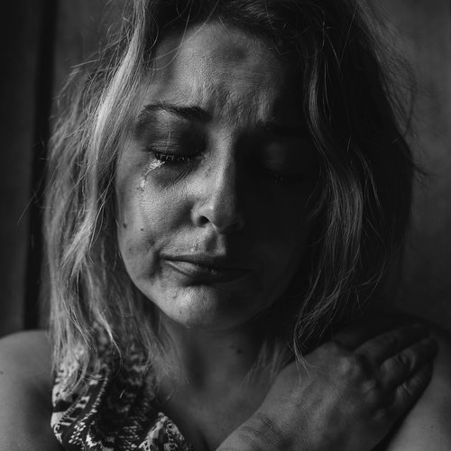
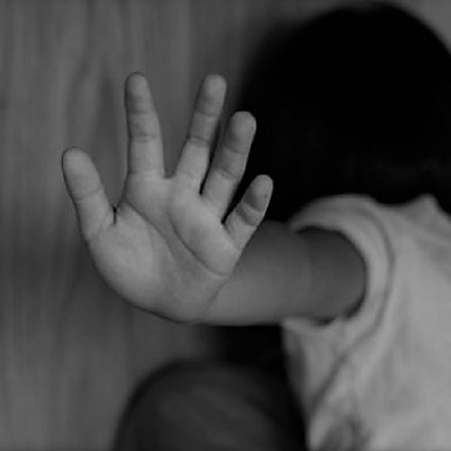
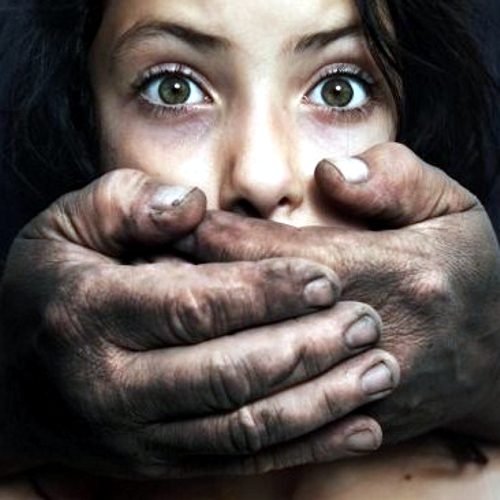
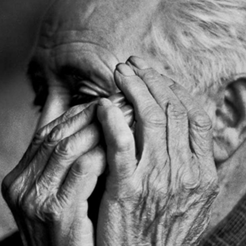

Abuso doméstico
Muitas relações afetivas são norteadas por violência, tendo em vista que a violência doméstica não se caracteriza apenas com a agressividade física, esta é a mais conhecida pela sociedade. Porém, a Lei Maria da Penha, primeira legislação específica para o combate à violência doméstica, especifica as formas de violência doméstica, prevista no artigo 7º e seus incisos, podendo ela ser: física, psicológica, moral, sexual e patrimonial. Após o abuso, as vítimas podem desenvolver consequências podendo elas ser problemas de saúde crónicos, doenças mentais, incapacidade de voltar a criar relações afetivas saudáveis, incapacidade financeira, problemas psicológicos, como perturbação de stress pós-traumático. Sendo importante ressaltar que além das vítima direta, estas consequências podem se estender aos demais que convivem com esse tipo de violência, e nas principais situações ocorre com as crianças que normalmente convive diariamente com cenas de abuso.

Trauma desde a infância.
Como mencionado anteriormente, a violência doméstica está enraizada na cultura da nossa sociedade, muitos atos que são considerados de violência doméstica muitas das vezes não são identificados como tal, pois a cultura faz com que certos hábitos do homem sobre a mulher se torne uma normalidade do dia a dia. Esse fato é preocupante, visto que nascemos em um ambiente social e dele retiramos diversos conhecimentos que levamos para o resto da vida, isto faz com que crianças que nascem em uma família que contém um agressor normalize tal situação e com o tempo futuramente se submeta a violência sem quebrar um ciclo que aprendeu desde a sua infância. Desta forma, se faz necessário que este assunto seja trabalhado melhor, fazendo com que as crianças tenham conhecimento do assunto desde a educação infantil, sendo importante ressaltar a relevância da educação na vida de um indivíduo. Por meio dela, a criança pode salvar sua genitora de uma situação a qual ela vive há anos..

Não se cale.
A violência doméstica pode ocorrer com diversos grupos, sendo eles: mulheres, crianças, idosas e etc. Porém pesquisas demonstram que atualmente os grupos que mais sofrem desta violência são as mulheres, tendo em vista que estas se encontram em maior situação de vulnerabilidade por diversos motivos. Uma pesquisa realizada em 2019 pelo Instituto de Pesquisa Econômica Avançada Aplicada (veja os dados) com base nos dados da Pesquisa Nacional por Amostra de Domicílios, demonstra que:
O índice de violência doméstica com vítimas femininas é três vezes maior que o registrado com homens. Os dados avaliados na pesquisa mostram também que, em 43,1% dos casos, a violência ocorre tipicamente na residência da mulher, e em 36,7% dos casos a agressão se dá em vias públicas. Na relação entre a vítima e o perpetrador, 32,2% dos atos são realizados por pessoas conhecidas, 29,1% por pessoa desconhecida e 25,9% pelo cônjuge ou ex-cônjuge. Com relação à procura pela polícia após a agressão, muitas mulheres não fazem a denúncia por medo de retaliação ou impunidade: 22,1% delas recorrem à polícia, enquanto 20,8% não registram queixa.

Cultura abusiva
Sabe-se que a violência doméstica pode ocorrer com diversos grupos, sendo eles: mulheres, crianças, idosos, pessoas portadoras de deficiência e etc. Porém pesquisas demonstram que atualmente os grupos que mais sofrem desta violência são as mulheres, tendo em vista diversos motivos para esse fator. O principal deles é a desigualdade de gênero pois carregamos em nossa história uma cultura em que o homem e que o patriarcado deve dominar a relação suprimindo os direitos das mulheres.
Violência contra idosos
No Brasil o aumento do número de idosos com possibilidade de atingir elevadas faixas etárias, devido à demanda apresentada por essa nova parcela da população. A questão da violência doméstica contra idosos tem se ampliado e sugere necessidade de maior campo de investigação nessa área, dado o risco suposto ao qual essa população mais idosa está submetida. O objetivo deste artigo é verificar os estudos relacionados ao tema já realizados no Brasil e em diferentes países. O trabalho apresenta diversos pontos de abordagem da violência contra idosos, considerando questões relacionadas à cultura do envelhecimento, atuação de equipes de saúde, definição do termo abordado, aspectos legais e éticos da violência contra o idoso. Tal estudo permite ao pesquisador analisar os diferentes aspectos que envolvem a temática, demonstrando a necessidade de pesquisas específicas direcionadas ao tema.
